urban
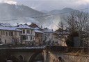Zlatograd, Bulgaria
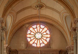Saint-Maimbœuf, France
Chiang Kai-shek Memorial
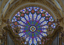Ebrach Abbey, Bavaria
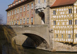Bamberg, Bavaria
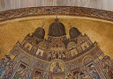Saint Mark's Basilica
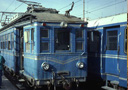Valencia, Spain in 1987
Zlatograd, Bulgaria
Saint-Maimbœuf, France
Chiang Kai-shek Memorial
nature
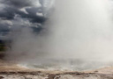Geyser, Iceland
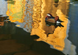Mandarin Duck, Hanover
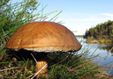Boletus, Finland
insects
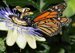Monarch, France
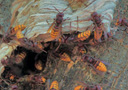Hornets